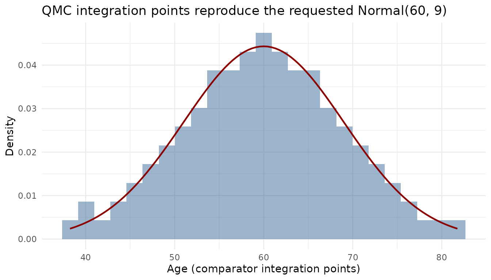

Every mlumr analysis follows the same four-step pipeline. This
vignette covers the family-agnostic machinery,
combining IPD and AgD and, above all, the numerical integration that
powers population adjustment. The exact set_ipd() /
set_agd() arguments for each outcome family are shown, with
complete runnable examples, in the per-outcome vignettes (see the
reference table below).
-
set_ipd(), individual patient data (the index treatment) -
set_agd()(orset_agd_surv()for survival), aggregate data (comparator) -
combine_data(), join them into onemlumr_dataobject -
add_integration(), quasi-Monte Carlo integration points (ML-UMR only)
The pipeline (illustrated on a binary endpoint)
The four steps below build a complete mlumr_data object
from a binary IPD trial and a one-row aggregate comparator; the sections
that follow explain each piece (covariate naming, integration,
correlation) in detail:
library(mlumr)
set.seed(2026)
# IPD (index): one row per patient
trial_a <- data.frame(
treatment = "Drug_A",
response = rbinom(500, 1, 0.6),
age_group = rbinom(500, 1, 0.4),
sex = rbinom(500, 1, 0.55)
)
ipd <- set_ipd(trial_a, treatment = "treatment", outcome = "response",
covariates = c("age_group", "sex"))
# AgD (comparator): one row per study, with covariate summaries
trial_b <- data.frame(
treatment = "Drug_B", n_total = 400, n_events = 160,
age_group_mean = 0.35, sex_prop = 0.50
)
agd <- set_agd(trial_b, treatment = "treatment",
outcome_n = "n_total", outcome_r = "n_events",
cov_means = c("age_group_mean", "sex_prop"),
cov_types = c("binary", "binary"))
dat <- combine_data(ipd, agd)
dat
#> Unanchored Comparison Data (Binary)
#> ====================================
#>
#> Index treatment (IPD): Drug_A
#> N = 500
#> Events = 303 (60.6%)
#>
#> Comparator treatment (AgD): Drug_B
#> N = 400
#> Events = 160 (40.0%)
#>
#> Covariates ( 2 ): age_group, sex
#> Integration points: not yet added (use add_integration())Outcome-family input reference
The outcome arguments differ by family; everything else (covariates, combining, integration) is identical. Each family has a complete worked example.
| Family |
set_ipd() outcome args |
set_agd() outcome args |
Vignette |
|---|---|---|---|
| binomial |
outcome (0/1) |
outcome_n, outcome_r
|
vignette("binary-outcomes") |
| normal |
outcome, family = "normal"
|
outcome_mean, outcome_se (+
outcome_n) |
vignette("continuous-outcomes") |
| poisson |
outcome, exposure,
family = "poisson"
|
outcome_r, outcome_E
|
vignette("count-outcomes") |
| survival |
Surv/time/status,
family = "survival"
|
set_agd_surv(): pseudo-IPD
time/status
|
vignette("survival-outcomes") |
set_ipd() validates that the outcome matches the family
(binary 0/1; numeric for normal; non-negative integer counts for
Poisson; positive times for survival) and drops rows with missing values
(with a warning).
Covariate naming and types
set_agd() strips _mean and
_prop suffixes so AgD covariate names match the IPD
(age_group_mean → age_group,
sex_prop → sex). Declare each covariate as
"binary" or "continuous" via
cov_types; continuous covariates also need a
standard-deviation column in cov_sds.
Scale conventions for aggregate summaries
For the normal family, outcome_mean and
outcome_se must be on the original (arithmetic)
scale, the same scale as the IPD outcome, even when fitting
with link = "log". Back-transform any geometric mean or
log-scale summary (propagating the SE by the delta method) before
calling set_agd(). See
vignette("continuous-outcomes").
Integration points
ML-UMR adjusts for covariate imbalance by integrating the IPD-derived outcome model over the comparator population’s covariate distribution. mlumr represents that distribution by Sobol quasi-Monte Carlo (QMC) integration points, correlated with a Gaussian copula so the joint covariate structure is respected.
dat <- add_integration(
dat,
n_int = 64,
age_group = distr(qbern, prob = age_group_mean),
sex = distr(qbern, prob = sex_mean)
)-
n_int, number of points (powers of 2: 32, 64, 128, …). More points give better accuracy at the cost of slower fitting; check adequacy withcheck_integration()(below). -
distr(), wraps a quantile function whose parameters reference AgD summary columns. Useqbern(Bernoulli, supplied by mlumr) for binary covariates,qnormfor normal,qgammafor skewed positive covariates, andqlogitnormfor a covariate reported as a proportion on(0, 1).
mlumr’s qgamma() and qlogitnorm() accept a
mean and sd on the natural scale in place of
their native parameters, so the moments can be taken from a published
baseline table without conversion. Both must be supplied together. A
logit-normal additionally requires
sd^2 < mean * (1 - mean), the bound any variable on
(0, 1) satisfies; a percentage must be rescaled to a
proportion first.
add_integration(
dat, n_int = 64,
age = distr(qbern, prob = age_mean), # binary
bmi = distr(qnorm, mean = bmi_mean, sd = bmi_sd), # continuous (normal)
biomarker = distr(qgamma, mean = bio_mean, sd = bio_sd), # right-skewed
bsa = distr(qlogitnorm, mean = bsa_mean, sd = bsa_sd) # proportion on (0, 1)
)Correlation handling
By default the covariate correlation is estimated from the IPD
(Spearman) and adjusted for the Gaussian copula. For binary and mixed
discrete/continuous pairs this copula adjustment is a pragmatic
approximation: the exact latent Gaussian correlation depends on
the marginal prevalences, which the current transform does not use. It
is adequate for most datasets, but if you have strong prior information,
or covariates with prevalences near 0/1, strong correlations, or many
covariates, supply your own matrix via cor and confirm the
result is stable with check_integration().
my_cor <- matrix(c(1, 0.3, 0.3, 1), 2, 2)
add_integration(dat, n_int = 64, cor = my_cor,
age_group = distr(qbern, prob = age_group_mean),
sex = distr(qbern, prob = sex_mean))
add_integration(dat, n_int = 64, cor_adjust = "none", # no adjustment
age_group = distr(qbern, prob = age_group_mean),
sex = distr(qbern, prob = sex_mean))Inspecting the integration points
unnest_integration() expands the stored points to a data
frame with one row per aggregate row and integration point, one column
per covariate, plus .int_id and .agd_row, so
you can inspect or plot the realized comparator distribution
directly:
head(unnest_integration(dat)) # one row per point, covariates in columns
#> age_group sex .int_id .agd_row
#> 1 0 0 1 1
#> 2 1 0 2 1
#> 3 0 1 3 1
#> 4 0 0 4 1
#> 5 1 1 5 1
#> 6 0 0 6 1
check_integration(
dat,
age_group = distr(qbern, prob = age_group_mean),
sex = distr(qbern, prob = sex_mean)
)
#> Integration check: n_int = 64 vs 128
#> Resolution heuristic, max relative difference: 0.0079
#> Resolution stable within the package's 1% heuristic.
#> Declared-target fidelity, max relative difference: 0.0156
#> Caution: grid moments differ from declared AgD moments by 1-5%.
#> Joint: max |cor(current) - cor(doubled)|: 0.0113
#> Joint resolution stable within the package's 0.05 heuristic.
#> Target (spearman): max |cor(doubled) - cor_target|: 0.0196check_integration() compares the realized integration
points against the requested marginals and correlations and flags when
n_int is too small, run it whenever there are several or
strongly correlated covariates.
Visualizing the integration points
For a continuous covariate the quasi-Monte Carlo points should
reproduce the requested marginal. Here we build a small example with a
continuous age and overlay the integration points on the
requested Normal density:
set.seed(2026)
ipd_c <- data.frame(treatment = "Drug_A", response = rbinom(400, 1, 0.5),
age = rnorm(400, 55, 10))
agd_c <- data.frame(treatment = "Drug_B", n_total = 300, n_events = 120,
age_mean = 60, age_sd = 9)
dat_c <- combine_data(
set_ipd(ipd_c, treatment = "treatment", outcome = "response", covariates = "age"),
set_agd(agd_c, treatment = "treatment", outcome_n = "n_total",
outcome_r = "n_events", cov_means = "age_mean", cov_sds = "age_sd",
cov_types = "continuous"))
dat_c <- add_integration(dat_c, n_int = 128,
age = distr(qnorm, mean = age_mean, sd = age_sd))
pts <- unnest_integration(dat_c)
if (requireNamespace("ggplot2", quietly = TRUE)) {
library(ggplot2)
ggplot(pts, aes(age)) +
geom_histogram(aes(y = after_stat(density)), bins = 25,
fill = "#3B6B9A", alpha = 0.5) +
stat_function(fun = dnorm, args = list(mean = 60, sd = 9),
color = "darkred", linewidth = 0.8) +
labs(x = "Age (comparator integration points)", y = "Density",
title = "QMC integration points reproduce the requested Normal(60, 9)") +
theme_minimal()
}
Integration requirements for STC and naive
naive() can be called immediately after
combine_data() because it uses only the observed crude
outcomes. stc() requires integration points for nonlinear
links, including binomial and Poisson outcomes and normal-log models.
Replacing a covariate distribution by its mean before applying a
nonlinear inverse link does not recover the marginal outcome. Only the
normal identity-link STC can use the aggregate means directly; see
vignette("choosing-a-method").
dat_no_int <- combine_data(ipd, agd)
naive(dat_no_int)
#> Naive Unadjusted Indirect Comparison
#> =====================================
#>
#> Treatments: Drug_A vs Drug_B
#>
#> Population basis: index-study outcome versus comparator-population outcome; no common standardized target.
#>
#> Event rates:
#> Index (IPD): 0.606 (303/500)
#> Comparator (AgD): 0.400 (160/400)
#>
#> Log Odds Ratio: 0.8360 (SE: 0.1371)
#> 95% CI: [0.5673, 1.1047]
#>
#> All effect measures (95% CI):
#> Log odds ratio 0.8360 (SE 0.1371) [0.5673, 1.1047]
#> Odds ratio 2.3071 [1.7635, 3.0183]
#> Risk difference 0.2060 (SE 0.0328) [0.1417, 0.2703]
#> Risk ratio 1.5150 [1.3180, 1.7414]
stc(dat)
#> Simulated Treatment Comparison (G-computation)
#> ===============================================
#>
#> Treatments: Drug_A vs Drug_B
#>
#> Estimand population: comparator
#> Treating this as the index-population effect requires a separate effect-equality assumption; this calculation does not transport to the index population.
#>
#> Marginalized P(Y=1|index trt, comp pop): 0.6025
#> Observed P(Y=1|comp trt, comp pop): 0.4000
#>
#> Log Odds Ratio: 0.8213 (SE: 0.1383)
#> 95% CI: [0.5503, 1.0923]
#>
#> All effect measures (95% CI):
#> Log odds ratio 0.8213 (SE 0.1383) [0.5503, 1.0923]
#> Odds ratio 2.2736 [1.7339, 2.9812]
#> Risk difference 0.2025 (SE 0.0332) [0.1375, 0.2675]
#> Risk ratio 1.5062 [1.3091, 1.7331]
#>
#> Outcome model coefficients:
#> (Intercept) age_group sex
#> 0.3515 0.1693 0.0142